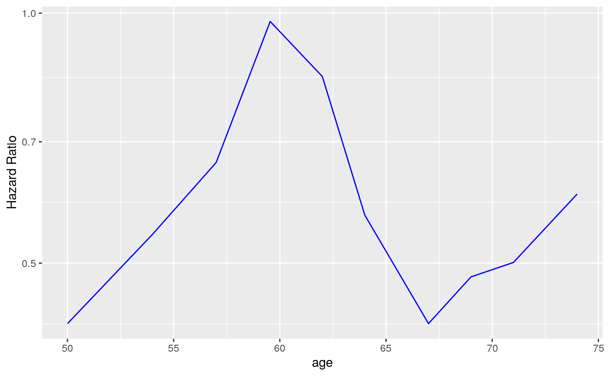

Create a STEP Graph
g_step.RdBased on the STEP results, creates a ggplot graph showing the estimated HR or OR
along the continuous biomarker value subgroups.
g_step( df, use_percentile = "Percentile Center" %in% names(df), est = list(col = "black", lty = 1), ci_ribbon = list(fill = "lightblue", alpha = 0.5) )
Arguments
| df | ( |
|---|---|
| use_percentile | ( |
| est | (named |
| ci_ribbon | (named |
Value
The ggplot2 object.
Examples
library(survival) lung$sex <- factor(lung$sex) # Survival example. vars <- list( time = "time", event = "status", arm = "sex", biomarker = "age" ) step_matrix <- fit_survival_step( variables = vars, data = lung, control = c(control_coxph(), control_step(num_points = 10, degree = 2)) ) step_data <- broom::tidy(step_matrix) # Default plot. g_step(step_data)# Add the reference 1 horizontal line. library(ggplot2) g_step(step_data) + geom_hline(aes(yintercept = 1), linetype = 2)# Use actual values instead of percentiles, different color for estimate and no CI, # use log scale for y axis. g_step( step_data, use_percentile = FALSE, est = list(col = "blue", lty = 1), ci_ribbon = NULL ) + scale_y_log10()# Adding another curve based on additional column. step_data$extra <- exp(step_data$`Percentile Center`) g_step(step_data) + geom_line(aes(y = extra), linetype = 2, color = "green")# Response example. vars <- list( response = "status", arm = "sex", biomarker = "age" ) step_matrix <- fit_rsp_step( variables = vars, data = lung, control = c( control_logistic(response_definition = "I(response == 2)"), control_step() ) ) step_data <- broom::tidy(step_matrix) g_step(step_data)